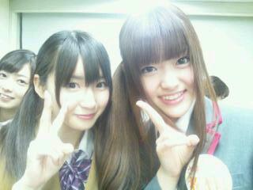

2012/0223Thuデビューじゃけん(o・・o)
こんばんごっ(o・・o)
さゆりんごっ(o・・o)
さゆりんこと
松村沙友理です＼(^_^)(^_^)／
ついにこの日がきました！
そう！
2012年 ２月２２日
乃木坂４６のデビューの日です♪
むかえてしまった！
オーディションに合格して
何もわからないままに
記者会見をしてから半年...
色々と語ろうかと思ったのですが
おもくなるのでやめた！
めでたい日だから
明るくいきましょー＼(^_^)(^_^)／
いや〜
はやかったな〜(>_<)うん
メンバーに
決まってからほんまに
『必死！』って感じやったよ〜＼(^^)／
辛いこともあったんかもね！
けどそれ以上に
楽しくて幸せな経験しましたなぁ(*´ー｀*)
まずはメンバー好きすぎる!!
女の子ばっかりやし
ドロドロしてたらどうしよ(´；ω；`)とか
思ったけど
そんなん全然なくて
みんなめっちゃいい子(*´ー｀*)♪
メンバーはほんまに
いろんなことに感謝して
ファンの皆さんが大好きで
イベントとかで
会えるんを何よりも
楽しみにしてますよ！
今回のミニ握手会で
さゆりんは
ろってぃー・なーちゃん・ひめたんと
広島と大阪にお邪魔してんけど
なまら楽しかったです!!
ほんまにありがとうございました♪
乃木坂46として
そして、
改めて『プロ』として
自覚をちゃんともって
努力を怠らず！
感謝を忘れず！
笑顔で楽しんで！
目標はたかく！
突き進みます！
うちらはほんまに
未熟者で
まだまだａｋｂ４８さんの
ライバルとは
言えへんかもやけど
少しずつ成長できたら
ええなぁって思います(*´ー｀*)☆
乃木坂４６はこれから
どうなるんか全然わからへん！
だから面白いんよね〜＼(^^)／
みなさん！
これからも
さゆりんの背中を押しつづけてくれたら
めたんこ嬉しいです(>_<)
松村はほんまに
とろいんで
力いっぱいおしてな〜＼(^^)／ww
それにこたえれるように
頑張るから！ほんまに！
みなさんも
渇いれてほしかったら
さゆりんごぱんちしまっせ〜(*´ー｀*)
さゆりんごあっぱーでもええよん♪
さゆりんごキックは
危ないから注意やで！
これからも
応援よろしくお願いします♪
ほなら、またね〜(*´ー｀*)☆
乃木坂４６
松村沙友理でした♪

2012/02/23 23:06
コメント(226)
デビューおめでとう!!
今までたくさんつらいことも経験してメンバーみんなで努力してきたから今のさゆりん達があるんだよね
これからもさらにステップアップしていってね
さゆりんには全握で会えるから楽しみにしてるよー
今までたくさんつらいことも経験してメンバーみんなで努力してきたから今のさゆりん達があるんだよね
これからもさらにステップアップしていってね
さゆりんには全握で会えるから楽しみにしてるよー
デビューおめでとう
これからもずっと応援します
これからもずっと応援します
こんばんご！
なすりんご！
初コメですｗｗｗ
初めにデビューおめでとう！
メンバーみんないい人でよかったね＾＾
僕は鹿児島に住んでるのでイベントにはほとんどいけません・・・＞＜
でもさゆりんごのこと好きなんで握手会とかいつかは絶対行きたいです！！！
さゆりんごの背中押しまくりますわｗｗｗ
是非喝入れてほしいです！
さゆりんごぱんちしてほしいです。
さゆりんごきっくしてほしいです。
さゆりんごあっぱーしてほしいです。
これから毎回コメントしますね！
でわ
鹿児島からさゆりんごの応援がんばりんご♪
ナスカ＠いちごミルク推し
なすりんご！
初コメですｗｗｗ
初めにデビューおめでとう！
メンバーみんないい人でよかったね＾＾
僕は鹿児島に住んでるのでイベントにはほとんどいけません・・・＞＜
でもさゆりんごのこと好きなんで握手会とかいつかは絶対行きたいです！！！
さゆりんごの背中押しまくりますわｗｗｗ
是非喝入れてほしいです！
さゆりんごぱんちしてほしいです。
さゆりんごきっくしてほしいです。
さゆりんごあっぱーしてほしいです。
これから毎回コメントしますね！
でわ
鹿児島からさゆりんごの応援がんばりんご♪
ナスカ＠いちごミルク推し
おこんばんは(。^-^。)
中元ブログ見て、今日はUP無いかと思てたけど、ちゃんとあがってるやん。
良かった、良かった♪
CDデビュー、おめでとさん☆☆☆
たくさん売れて欲しいね。
早く、ライブやらコンサートが出来るようになったらええな。
(。・_・。) マッテルワ
中元ブログ見て、今日はUP無いかと思てたけど、ちゃんとあがってるやん。
良かった、良かった♪
CDデビュー、おめでとさん☆☆☆
たくさん売れて欲しいね。
早く、ライブやらコンサートが出来るようになったらええな。
(。・_・。) マッテルワ
初コメ！
今日のトークショー＆ミニ握手会行ったで！
お疲れ＼(^o^)／
めちゃ楽しかった！
さゆりんめちゃ可愛かったー\(//∇//)\
ゆーくん。
さゆりん初めまして！！
ゆうすけと言います！
これからブログ読ませてもらいます！
さゆりんの背中を全力で推していくんでよろしく
こんばんごっ(o・・o)
乃木坂46、さゆりんデビュー
ほんとおにおめでとお(>_<)
この日をずっと待ってました！
これからも力いっぱいさゆりん
をおしてくよー(*´∀｀*)
さゆりんはうちの自慢の推しです(^○^)
なにかに負けそうになったら
ぱんちしてもらいます。(真顔)
これからもがんばってね♪♪
初コメです！
初めてテレビで見た時から結婚したいと思いました(^O^)
めっちゃ可愛いです！
これからもがんばってください!!!!
初めてテレビで見た時から結婚したいと思いました(^O^)
めっちゃ可愛いです！
これからもがんばってください!!!!
こんばんさゆりんごっ(*´∇｀*)♪
さゆりん、乃木坂46デビューおめでとーＯ(≧▽≦)Ｏ
CD買ったよ！31日は1部2部と握手も行くね(>_<)
乃木坂はこれからが上り坂やんな！
ずっと応援してくで！
握手会楽しみーΣ(°ω°*)
さゆりん、乃木坂46デビューおめでとーＯ(≧▽≦)Ｏ
CD買ったよ！31日は1部2部と握手も行くね(>_<)
乃木坂はこれからが上り坂やんな！
ずっと応援してくで！
握手会楽しみーΣ(°ω°*)
はじめてコメントするよ('-^*)ok
さゆりんを初めて見た去年から、瞬時に推しに決定したあの時から早くもデビューしたんだね♪
一日ごとに成長していく姿が見えるから本当に応援したくなるんです(≧∀≦)
いつか握手会に行くね!!
さゆりんを初めて見た去年から、瞬時に推しに決定したあの時から早くもデビューしたんだね♪
一日ごとに成長していく姿が見えるから本当に応援したくなるんです(≧∀≦)
いつか握手会に行くね!!
さゆりんだいすき！!
しゃべり方とかもう最高～
これからのこのままのさゆりんでいてね
おうえんしてるから・・！
しゃべり方とかもう最高～
これからのこのままのさゆりんでいてね
おうえんしてるから・・！
握手会おつかれです！
これからも乃木坂４６、さゆりんを全力で応援していきます！
２５日むさし村山握手会参加するので会えるの楽しみにしてまーす！
これからも乃木坂４６、さゆりんを全力で応援していきます！
２５日むさし村山握手会参加するので会えるの楽しみにしてまーす！
初めてコメントさせていただきます
ひめたんのブログでコメント読みましたけど、無事さゆりんもブログ書けてよかった
広島のミニ握手会行きました！！
この日のために仕事をめちゃめちゃ急いで片付けて行ったので、思わず第一声が「会いたかった！！！！」ってなってしまいました
大声ですみません
二回握手したけど、さゆりんから「京都知ってるん？」って聞かれてめっっっっっっっちゃ嬉しかった

まさか質問されると思ってなくてびっくりしたありがとう
これからも応援します！！
ひめたんのブログでコメント読みましたけど、無事さゆりんもブログ書けてよかった
広島のミニ握手会行きました！！
この日のために仕事をめちゃめちゃ急いで片付けて行ったので、思わず第一声が「会いたかった！！！！」ってなってしまいました
大声ですみません
二回握手したけど、さゆりんから「京都知ってるん？」って聞かれてめっっっっっっっちゃ嬉しかった
まさか質問されると思ってなくてびっくりした
これからも応援します！！
早くさゆりんに会いたいわ～(≧∇≦)
名古屋個別で待ってるから!!
さゆりんごチョップがいい(*^o^*)
全力でさゆりんの背中押すで転ばないようにねww
名古屋個別で待ってるから!!
さゆりんごチョップがいい(*^o^*)
全力でさゆりんの背中押すで転ばないようにねww
デビューおめでとうございます。
やっとスタートにたどり着いた感じですかね？
名古屋での個別握手会楽しみにしてます。
さゆりんごに喝入れてほしいです。自分はパンチ希望で(笑)
やっとスタートにたどり着いた感じですかね？
名古屋での個別握手会楽しみにしてます。
さゆりんごに喝入れてほしいです。自分はパンチ希望で(笑)
》ちゃんとブログあがってるよ。
て、コメントしてからタイトルの広島弁と、内容をよくよく読み返してみれば…
どうやら昨日投稿したのんが、今日UPされたみたいやな。
なんにせよ、これから背中ガンガン押しまくるで。
つんのめったりせんように気をつけてや。
ヨイショ((((」。・_・)」( o・ ・o)
て、コメントしてからタイトルの広島弁と、内容をよくよく読み返してみれば…
どうやら昨日投稿したのんが、今日UPされたみたいやな。
なんにせよ、これから背中ガンガン押しまくるで。
つんのめったりせんように気をつけてや。
ヨイショ((((」。・_・)」( o・ ・o)
大阪の握手会参加したよお〜！
初、さゆりんごでしたけど、めっちゃ可愛かったぁw
次、会える日を楽しみにしてます！
初、さゆりんごでしたけど、めっちゃ可愛かったぁw
次、会える日を楽しみにしてます！
初コメです。
デビューおめでとうございます！ 北海道弁はななみんのが移りましたか＾＾
結局熱く語っていますね。 自分が乃木坂４６に惹かれたのは生駒チャンが居たからですが、さゆりんも徐々に番組で落ち着きと積極性を発揮して持ち味を発揮されていますね～
いつか北海道で会えること楽しみにしています♪
デビューおめでとうございます！ 北海道弁はななみんのが移りましたか＾＾
結局熱く語っていますね。 自分が乃木坂４６に惹かれたのは生駒チャンが居たからですが、さゆりんも徐々に番組で落ち着きと積極性を発揮して持ち味を発揮されていますね～
いつか北海道で会えること楽しみにしています♪
なんか日に日にコメント数が増えている。ほんとにすごいスピードで人気が上がってるんだなぁって最近ファンになったばっかの俺でさえ感じるわ。
めっちゃ背中押すよー。推すよー。ただ、転ばないように注意してね。無理し過ぎると体壊しちゃうから。
無理するなってのはデビューしたての乃木坂にとってはそれこそ無理だと思うから、今は程よい無理をして頑張ってね。
めっちゃ背中押すよー。推すよー。ただ、転ばないように注意してね。無理し過ぎると体壊しちゃうから。
無理するなってのはデビューしたての乃木坂にとってはそれこそ無理だと思うから、今は程よい無理をして頑張ってね。
CD買いましたよ♪
もちろん個別握手券付きを(笑)
さゆりんと話せるのを楽しみにしてます(嬉〃ω〃)
もちろん個別握手券付きを(笑)
さゆりんと話せるのを楽しみにしてます(嬉〃ω〃)
こんばんご☆
今日のイオン大日イベント
おつかりんご(^o^)
乃木坂つひにデビューしましたね
さゆりんにいっぱい会いたいから
CDけっこう買ったよ♪
これからも大変かも知れへんけど
さゆりんのめっちゃやさしい癒し顔と元気な可愛いさで
乃木坂のメンバーと一緒にAKBさんを目標にがんばりましょ!!
しっかり背中押すからね(^^)
今日僕が大阪のイオン大日イベントの最前列にいた
さゆりんごパ～ンチを要求したまのりんごです!!
さゆりん可愛い過ぎてもぅメロメロになってしまったよ(゜ロ゜)
飛び跳ねてるさゆりんめっちゃ可愛いかったわぁ
今でも鮮明に覚えてるよ♪
あと最後にギリギリ帰り際に手振ってくれたんも嬉しいかったありがとう!!
また次は3月24日の名古屋の握手会で喋ろうなぁ♪♪
あと何故か絵文字が使えなくてりんごが表現できないじゃないか!!??
これは悲し－ぃ
今日は疲れたと思うから
ゆっくり休んでね☆
おやすみぃ（´ω｀）
今日のイオン大日イベント
おつかりんご(^o^)
乃木坂つひにデビューしましたね
さゆりんにいっぱい会いたいから
CDけっこう買ったよ♪
これからも大変かも知れへんけど
さゆりんのめっちゃやさしい癒し顔と元気な可愛いさで
乃木坂のメンバーと一緒にAKBさんを目標にがんばりましょ!!
しっかり背中押すからね(^^)
今日僕が大阪のイオン大日イベントの最前列にいた
さゆりんごパ～ンチを要求したまのりんごです!!
さゆりん可愛い過ぎてもぅメロメロになってしまったよ(゜ロ゜)
飛び跳ねてるさゆりんめっちゃ可愛いかったわぁ
今でも鮮明に覚えてるよ♪
あと最後にギリギリ帰り際に手振ってくれたんも嬉しいかったありがとう!!
また次は3月24日の名古屋の握手会で喋ろうなぁ♪♪
あと何故か絵文字が使えなくてりんごが表現できないじゃないか!!??
これは悲し－ぃ
今日は疲れたと思うから
ゆっくり休んでね☆
おやすみぃ（´ω｀）
さゆりん！デビューおめでとう。(^^)d
今ぐるぐるカーテンのタイプBのDVD見てました。(^^)/
昨日はせっかく大日に来てたのに行けなかった。
残念(;_;)/
辛いこともあるけれど若い内の苦労はかってでもしろって言うし！
いつも家族で応援してます。
私は乃木坂オタになってしまいましたが(^_^ゞ
今回の写メ、ダブルさゆりやん！
(^ー^)嬉しい
さゆりんガンバ！
しかし、先週の乃木ドコ、姉リンゴと母リンゴの出演は笑った(*^▽^)/
今ぐるぐるカーテンのタイプBのDVD見てました。(^^)/
昨日はせっかく大日に来てたのに行けなかった。
残念(;_;)/
辛いこともあるけれど若い内の苦労はかってでもしろって言うし！
いつも家族で応援してます。
私は乃木坂オタになってしまいましたが(^_^ゞ
今回の写メ、ダブルさゆりやん！
(^ー^)嬉しい
さゆりんガンバ！
しかし、先週の乃木ドコ、姉リンゴと母リンゴの出演は笑った(*^▽^)/
デビューおめでとう(*´∇｀*)
そっかプロになったんだね!!これからも楽しみだな～さゆりんの変化♪
自己紹介で照れてるのもそのうち無くたってしまうかな!?( ￣▽￣)
ファイト～
そっかプロになったんだね!!これからも楽しみだな～さゆりんの変化♪
自己紹介で照れてるのもそのうち無くたってしまうかな!?( ￣▽￣)
ファイト～
最近、さゆりん好きになったよ(*^^*)
ごめんねファン歴遅くてっ(¨;)
でもうちも誰より応援してるからね♪
デビューおめでとう！！
乃木坂４６の歴史がはじまったんやな
まだまだ知名度は低いかもせんけど、これからやで☆
これからもさゆりんの背中押すぜ！！
しっかり頑張り伝わってるよ。
これからも元気をたくさんちょうだいや～！！
大阪の個別待ってます。
乃木坂４６の歴史がはじまったんやな
まだまだ知名度は低いかもせんけど、これからやで☆
これからもさゆりんの背中押すぜ！！
しっかり頑張り伝わってるよ。
これからも元気をたくさんちょうだいや～！！
大阪の個別待ってます。
今日行ったよ!初めてさゆりんに会って益々好きになったわ&iF9AB;
さゆりんごパンチしてもらえばよかった(笑)また絶対行くから!
さゆりんごパンチしてもらえばよかった(笑)また絶対行くから!
デビューおめでとう！！
精一杯押すし、推すで～
精一杯押すし、推すで～
初コメです！！
(｡･ω･ﾉﾉﾞ☆デビューおめでとう☆ヾヽ(･ω･｡)
まだファンになってから間もないんだけど
この数日で乃木坂のことそしてさゆりんのことが
大好きになりました！！
アイドルを好きになるなんて思わんかったわ…(笑)
微力ですが応援してるので頑張ってください！！
活躍きたいしてるね(^^)d
デビューおめでとうございます＼(^O^)／
さゆりんならぬ ななしです('◇')ゞ
微力ながらに全力でさゆりんごの背中を推したいと思います！
でも、逆に渇いてほしいのでさゆりんごキックを希望しようかなぁ(*'o'*)笑
土曜のミニ握手会には行けると思うので、その時はさゆりんごぱんちをよろしくですよ♪o(゜へ゜)○☆ドカッ
身体に体調にと気をつけて下さいね(・ω・)ノ
さゆりんならぬ ななしです('◇')ゞ
微力ながらに全力でさゆりんごの背中を推したいと思います！
でも、逆に渇いてほしいのでさゆりんごキックを希望しようかなぁ(*'o'*)笑
土曜のミニ握手会には行けると思うので、その時はさゆりんごぱんちをよろしくですよ♪o(゜へ゜)○☆ドカッ
身体に体調にと気をつけて下さいね(・ω・)ノ
握手会で「今度ブログにメガネ写メ載せてください 」って言った
」って言った
わくらんです
今日の
大阪のミニ握手会
めちゃんこおもしろかったです～
生さゆりんみて失神寸前だったお～

さゆりんの背中を猛烈に押していくので
さゆりんごアッパーを俺にばちこーんとぶちかましてください
個別の握手会にも参戦する予定なので
楽しみにしてます
さゆりん意外とMC的なポジションもいけそうですね
ちょっとあたふたしてたけど（笑）
わくらんです
今日の
大阪のミニ握手会
めちゃんこおもしろかったです～
生さゆりんみて失神寸前だったお～
さゆりんの背中を猛烈に押していくので
さゆりんごアッパーを俺にばちこーんとぶちかましてください
個別の握手会にも参戦する予定なので
楽しみにしてます
さゆりん意外とMC的なポジションもいけそうですね
ちょっとあたふたしてたけど（笑）
今日あえて嬉しかったぁ(*´∀｀*)ありがとう(^o^)ほんの数秒だったけど笑顔で握手できて嬉しかったぁ(o^o^o)
また会いに行くのでよろしくねぇ～(^o^)
大阪の娘はやはりノリよくてええわね(*´∀｀*)
また会いに行くのでよろしくねぇ～(^o^)
大阪の娘はやはりノリよくてええわね(*´∀｀*)
そーいやーさゆりんごビンタってないんですね?（笑）松村ちゃんの身長だと丁度良い
破壊力かもしれないだがや??( ^^)Y☆Y(^^ )！(＾＾)！にしても、そうそうなんでしたっけ
どっかのPVにありましたが、初日にうっすらメイクして来たのって白石さんとさゆりんごだけ
なんですな?。皆さん若いからでしょうが（あっロンモチまいやんもさゆりんごも
若いでやんす( ^^)Y☆Y(^^ )(゜▽゜)）そーきゃあ、あっさり投げる所なんかも関西の方
って感じでやんすね?可愛いらしいじゃき?o(^-^o)(o^-^)o(゜o゜)＼(-_-)画の制服さゆりんごも
可愛いだすな?。魁！とMJの相撲だったりも意外なキャラがでてて面白かっただがや?＼(^^:;)。
あとはEXの三人揃いのグラビアとかプレイボーイの制服なんかも似合いすぎて可愛すぎ
でしたなも?。そーいや今日はにゃんにゃんの日だったんだそうで！(＾＾)！(＃^.^＃)
そーいう語呂を秋元さんも狙われたのかな?って思ったりでしたにゃー(゜▽゜)開運のも可愛かったですね?！
イベントもまあ頑張っておくんなまし??。次は何が来ますかね?さゆりんごもしらないなら
予想もつかないでやんすよね?(∪o∪)。。。＼＾o＾／レッスンも頑張ってつかーさい
破壊力かもしれないだがや??( ^^)Y☆Y(^^ )！(＾＾)！にしても、そうそうなんでしたっけ
どっかのPVにありましたが、初日にうっすらメイクして来たのって白石さんとさゆりんごだけ
なんですな?。皆さん若いからでしょうが（あっロンモチまいやんもさゆりんごも
若いでやんす( ^^)Y☆Y(^^ )(゜▽゜)）そーきゃあ、あっさり投げる所なんかも関西の方
って感じでやんすね?可愛いらしいじゃき?o(^-^o)(o^-^)o(゜o゜)＼(-_-)画の制服さゆりんごも
可愛いだすな?。魁！とMJの相撲だったりも意外なキャラがでてて面白かっただがや?＼(^^:;)。
あとはEXの三人揃いのグラビアとかプレイボーイの制服なんかも似合いすぎて可愛すぎ
でしたなも?。そーいや今日はにゃんにゃんの日だったんだそうで！(＾＾)！(＃^.^＃)
そーいう語呂を秋元さんも狙われたのかな?って思ったりでしたにゃー(゜▽゜)開運のも可愛かったですね?！
イベントもまあ頑張っておくんなまし??。次は何が来ますかね?さゆりんごもしらないなら
予想もつかないでやんすよね?(∪o∪)。。。＼＾o＾／レッスンも頑張ってつかーさい
デビューおめでとう(*^▽^)/
ぐるぐるカーテンめっちゃ聴いてます(*^o^*)
早くさゆりんと握手したいですｏ(＾-＾)ｏ
これからもずっと応援してます(^o^)
頑張ってね(*^o^*)
デビューおめでとう!!
しっかりCD買いました!
これからも
さらなる高みを目指して
頑張ろう(*゜ー゜)b
いつまでも
初心の心は忘れないでね!
写真…ダブルさゆ可愛い＞＜
それではっ。
ＣＤ買ったよ?&iF9CC;
めっちゃテレビ出ててさゆりん見れて明るく元気になるよ&iF9CF;
今度尻相撲勝負してちょうだい&iF99F;
めっちゃテレビ出ててさゆりん見れて明るく元気になるよ&iF9CF;
今度尻相撲勝負してちょうだい&iF99F;
今日はありがとー＼(^o^)／
なまらきてああああｗｗｗ
北海道から遠征してほんまによかったわあ！！ｗ
さゆりんに会えて高まって高まって高まりすぎた(>_<)
あのとき言えなかったから今伝えるね。
デビューおめでと！！
この先辛いことや大変なこといろいろつまづくことがあるかもしれないけど、
みんなで力合わせて頑張って乗り越えてね。
今すぐにAKBを抜くのは難しいかもしれない。
けど壁にぶつかっても負けずに真っすぐ進んでね。
俺らはさゆりん達の一歩後ろで背中を押しつづけるから。
でもまあまだ、歩き出したばかり！
上を向いていこー(^ω^)
最後のサプライズ？ハプニング？
なまら驚いたｗｗ
驚きすぎて戸惑ったｗｗ
でもオーラがさゆりんだったから気付いたよ('∀'●)
さゆりんごぱんち喰らい忘れたあ（泣）
とりあえず今日はゆっくり休んでね。
お疲れ様でした＼(^o^)／
なまらきてああああｗｗｗ
北海道から遠征してほんまによかったわあ！！ｗ
さゆりんに会えて高まって高まって高まりすぎた(>_<)
あのとき言えなかったから今伝えるね。
デビューおめでと！！
この先辛いことや大変なこといろいろつまづくことがあるかもしれないけど、
みんなで力合わせて頑張って乗り越えてね。
今すぐにAKBを抜くのは難しいかもしれない。
けど壁にぶつかっても負けずに真っすぐ進んでね。
俺らはさゆりん達の一歩後ろで背中を押しつづけるから。
でもまあまだ、歩き出したばかり！
上を向いていこー(^ω^)
最後のサプライズ？ハプニング？
なまら驚いたｗｗ
驚きすぎて戸惑ったｗｗ
でもオーラがさゆりんだったから気付いたよ('∀'●)
さゆりんごぱんち喰らい忘れたあ（泣）
とりあえず今日はゆっくり休んでね。
お疲れ様でした＼(^o^)／
お疲れちゃん
さゆりんごパンチ食らわせて貰おうか!
握手会行くから名前覚えといてww
イギータだぉ(ρ°∩°)
＜重要＞
さゆりんごパンチ食らわせて貰おうか!
握手会行くから名前覚えといてww
イギータだぉ(ρ°∩°)
＜重要＞
Tシャツの質問答えてよー(^o^)
さゆりんTシャツつくったの
どう思う？
ミタパンブー見たよ(*^^*)
さゆりん諦め早いなあ！笑
さっき前にやった
オンタマ見てた！
出来る出来る出来る さゆりんなら出来る！
かわいすぎるわ～！
ひとつ前のさゆりんブログで
コメント5番だったぜ～！
デビューおめでとーう (^o^)/
今度、さゆりんごぱんち よろしく～ 笑
今度、さゆりんごぱんち よろしく～ 笑
さゆりん
毎度お馴染みまたきたよー&iF8EE;ｗ
デビューほんとに
おめでとう(^O^)/&iF8EE;！
ぼくも22日をどれほど
待ったことか...
たしかに
新しい世界に一歩
踏み入れるってのは
とても大変なことだよね&iF997;
しかも芸能界ともなったら
よっぽどのプレッシャー
だよー(^O^)/&iF8EE;
さゆりんはほんと頑張り
屋さんなんだねー(>_<)&iF8EE;
ぼくも最近部活とかで
大変なこと
多いんだけど
テレビでさゆりんのこと
見て元気
いっぱいもらってますよー&iF9D2;&iF8EE;
ってかねー
高校生でお金ないけど
なけなしのお金で
9枚も買ったよー&iF9F8;&iF8EE;！
さゆりんといっぱい
握手したいし
お話ししたいからさー&iF9CF;&iF99A;
もー個別握手会が
ほんとうに
待ち遠しいよー(ノ゜O゜)ノ&iF8EE;
そんでもってぼくは
最近はさゆりんに
元気もらいっぱなしだから
握手会でさゆりんいっぱい
笑わせたりして
元気お返しします！ｗ
そこでまた質問です&iF9C6;&iF8EE;
さゆりんは
ぼくみたいに毎回ブログに
コメントしたりしてる人の
名前覚えてたりしてくれて
ますか？&iF8EE;
これはたぶんみんなが
聞きたいことだと思うので
代表して聞いちゃいましたｗ
でももし覚えくれてたりしたら
嬉しすぎて
握手会でテンション
おかしくなりますね(￣▽￣；)ｗ
最近さゆりん
忙しいから
暇があったら答えください&iF9CB;&iF8EE;
今回は
ほんとうにデビュー
おめでとうございます！&iF8EE;
これからも
一生あなたのファンで
います！
たくみ
毎度お馴染みまたきたよー&iF8EE;ｗ
デビューほんとに
おめでとう(^O^)/&iF8EE;！
ぼくも22日をどれほど
待ったことか...
たしかに
新しい世界に一歩
踏み入れるってのは
とても大変なことだよね&iF997;
しかも芸能界ともなったら
よっぽどのプレッシャー
だよー(^O^)/&iF8EE;
さゆりんはほんと頑張り
屋さんなんだねー(>_<)&iF8EE;
ぼくも最近部活とかで
大変なこと
多いんだけど
テレビでさゆりんのこと
見て元気
いっぱいもらってますよー&iF9D2;&iF8EE;
ってかねー
高校生でお金ないけど
なけなしのお金で
9枚も買ったよー&iF9F8;&iF8EE;！
さゆりんといっぱい
握手したいし
お話ししたいからさー&iF9CF;&iF99A;
もー個別握手会が
ほんとうに
待ち遠しいよー(ノ゜O゜)ノ&iF8EE;
そんでもってぼくは
最近はさゆりんに
元気もらいっぱなしだから
握手会でさゆりんいっぱい
笑わせたりして
元気お返しします！ｗ
そこでまた質問です&iF9C6;&iF8EE;
さゆりんは
ぼくみたいに毎回ブログに
コメントしたりしてる人の
名前覚えてたりしてくれて
ますか？&iF8EE;
これはたぶんみんなが
聞きたいことだと思うので
代表して聞いちゃいましたｗ
でももし覚えくれてたりしたら
嬉しすぎて
握手会でテンション
おかしくなりますね(￣▽￣；)ｗ
最近さゆりん
忙しいから
暇があったら答えください&iF9CB;&iF8EE;
今回は
ほんとうにデビュー
おめでとうございます！&iF8EE;
これからも
一生あなたのファンで
います！
たくみ
最近、録画した番組でよくさゆりんご見るよ(^-^)v
乃木坂46が有名になってくれたらすげぇ嬉しいな!
すでに結構、噂だけどね(^^)d
さゆりんごは、自分のペースで頑張って！
さゆりーん(*^^*)
さゆりんごキックしてー(*^^*)
今日大日イベント行ったでぇ
さゆりん推しって決めてイベントでさゆりんを見てさゆりんを推しに選んで良かったと思った
こんな僕ですが、これからも乃木坂を…さゆりんの背中を押させてください
さゆりん推しって決めてイベントでさゆりんを見てさゆりんを推しに選んで良かったと思った
こんな僕ですが、これからも乃木坂を…さゆりんの背中を押させてください
さゆりんデビューおめでとう！
ＣＤが届いて乃木坂の詩のＭＶ見ました。
正直にここだけの話しで…。
泣きました。
8月21日からの半年を振り返って色々あったなぁと思ったら…。
でも、さゆりんの背中を押すために頑張りまっす！
みんなが乃木坂メンバーの背中を押すから止まらずに登って行ってなぁ!!
ＣＤが届いて乃木坂の詩のＭＶ見ました。
正直にここだけの話しで…。
泣きました。
8月21日からの半年を振り返って色々あったなぁと思ったら…。
でも、さゆりんの背中を押すために頑張りまっす！
みんなが乃木坂メンバーの背中を押すから止まらずに登って行ってなぁ!!
もちろん応援するよ!
私はさゆりんの飾らない笑顔が大好き!
心から笑ってるーみたいなねっ!
これからもそうゆう笑顔がみたいなぁ(^O^)
個別も全握も楽しみ!
さっそく全部のバージョンのＣＤとＤＶＤをチェック♪
いいね
デビューおめでとう
初日２位で、ウィークリーもとっても期待してるで
いいね
デビューおめでとう
初日２位で、ウィークリーもとっても期待してるで
デビューおめでとう＆握手会お疲れー！
これからも、プロという自覚持って頑張ろ!!
クリスマスウィークの時にさゆりんごパンチ食らったっきりだ。もう、効果切れちゃうよー(ToT)
3/3に会えると思うから、さゆりんごアッパーよろしくね(笑)
今日も頑張ってこーうヽ(・∀・)ノ
これからも、プロという自覚持って頑張ろ!!
クリスマスウィークの時にさゆりんごパンチ食らったっきりだ。もう、効果切れちゃうよー(ToT)
3/3に会えると思うから、さゆりんごアッパーよろしくね(笑)
今日も頑張ってこーうヽ(・∀・)ノ
こんばんごっ(o・・o)さゆりんご～
更新待ってたで～
ブログの更新あってからちゃんと書こうと思ってね。
さゆりんご、デビューおめでとう！
去年のお見立て会や似顔絵会やらいろいろとありましたが、ようやくこの日を迎えましたね。
さゆりんごを雑誌やテレビでチェックする毎日。
渋谷のデカイ看板も毎日見てるし、
さゆりんご推しでほんとに良かった。
乃木坂の詩、良い歌やね。
聴きながら、さゆりんごと一緒に坂を登っていきたい！と思ったよ。
いろいろとツライことはいっぱいあったろうし、これからもいろいろと待ち構えているかもしれないけど、自分には励ますことしかできないから、さゆりんごの背中をずっと押し続けます。
週末は久々に会えるから楽しみやねん。
ほんならまたね～！
更新待ってたで～
ブログの更新あってからちゃんと書こうと思ってね。
去年のお見立て会や似顔絵会やらいろいろとありましたが、ようやくこの日を迎えましたね。
さゆりんごを雑誌やテレビでチェックする毎日。
渋谷のデカイ看板も毎日見てるし、
さゆりんご推しでほんとに良かった。
乃木坂の詩、良い歌やね。
聴きながら、さゆりんごと一緒に坂を登っていきたい！と思ったよ。
いろいろとツライことはいっぱいあったろうし、これからもいろいろと待ち構えているかもしれないけど、自分には励ますことしかできないから、さゆりんごの背中をずっと押し続けます。
週末は久々に会えるから楽しみやねん。
ほんならまたね～！
どうもトミー(地主)です!!
あれからもう半年たつんだねーΣ(゜□゜;)
あっという間だったわ(笑)
握手お疲れさま＼(^o^)／
全握と個別行くよ)!!
あれからもう半年たつんだねーΣ(゜□゜;)
あっという間だったわ(笑)
握手お疲れさま＼(^o^)／
全握と個別行くよ)!!


色々な思いがやっぱあるんだね。
ミニ握手会にはいけないけど
個別には行くからよろしくね〜